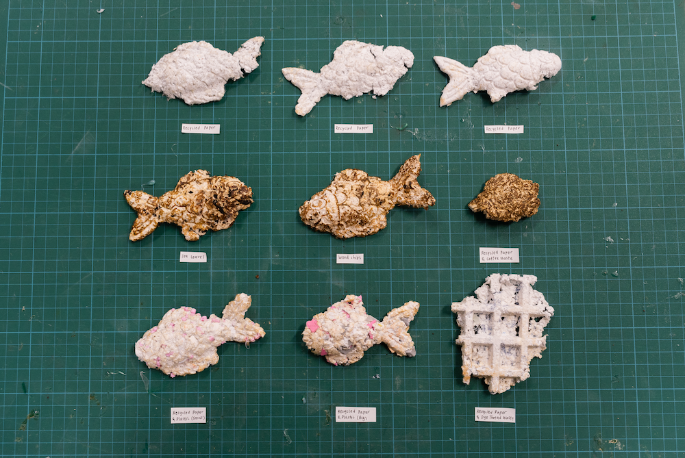

Experiments with making paper from upcycled materials with Future Crafts Project.
01. INDUSTRIAL WASTE
About 7.6 billion tons of industrial solid waste is produced each year. Future Craft Project collects industrial waste such as synthetic fibers, plastic offcuts, wood chips, and tea leaves. I conducted experiments in making paper with these materials to decrease the drying time during the process.



(Heat pressed with taiyaki and waffle makers)
02. HOUSEHOLD FOOD WASTE
The average number of times a piece of paper can be recycled ranges from about 5 to 7. Afterwards, the papers’ fibers become too short and can’t be used for paper again. Following experiments explored upcycling waste to lengthen paper fibers. Banana fibers were eventually used due to their long fibers.


In this project, I explored different paper making methods with upcycled materials to decrease the drying time and increase the paper’s lifecycle post-consumption. Through my own exploration, I found that banana peels proved to be the best material due to its long fibers. Experiments were expanded to conduct a paper upcycling workshop at AkeruE (Panasonic Creative Museum) in Tokyo. .
→ Summer 2023 (2 weeks)
→ Instructors: Junichi Yamaoka